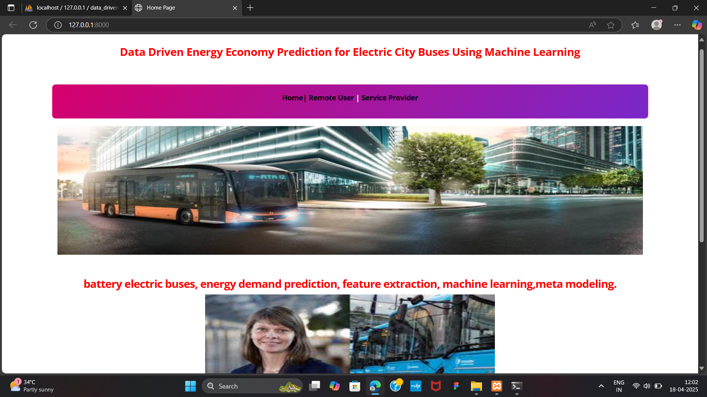
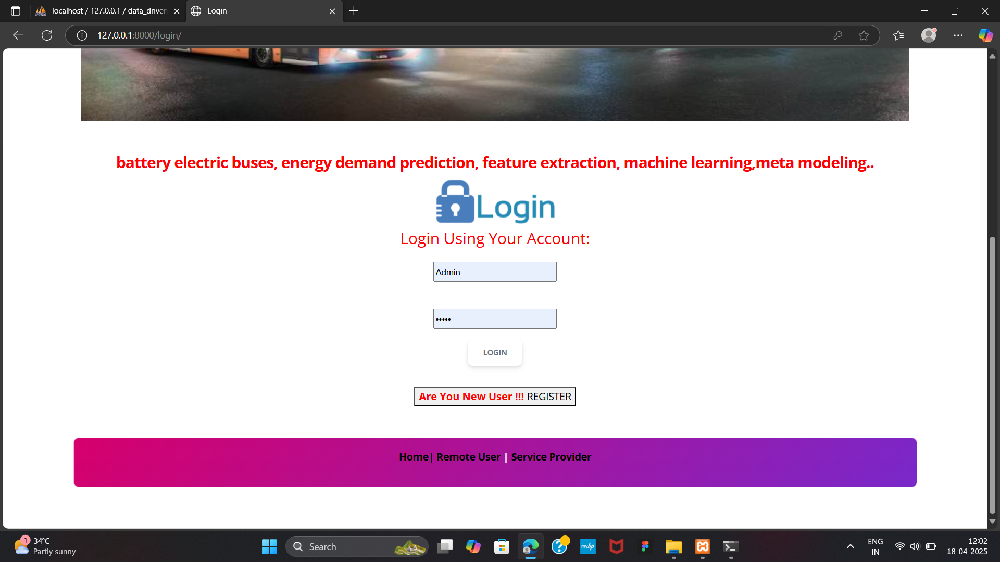
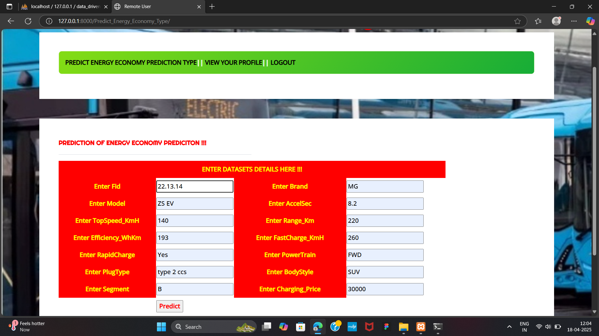
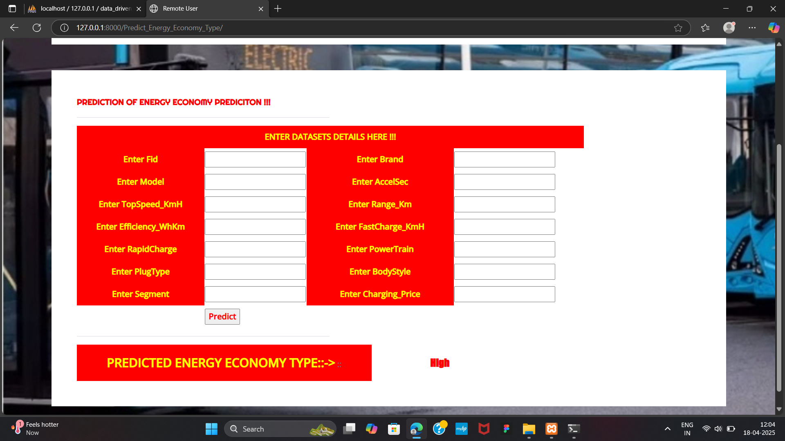

Moviepedia — Movie Search Web App
Tech Stack: HTML, CSS, JavaScript, OMDb API
Built a responsive single-page app to fetch and display movie data
via the OMDb API, with modular JavaScript for clean code and error
handling.
Implemented light/dark mode toggle using CSS variables and enhanced
accessibility with ARIA tags and mobile-first design
Added persistent search history using localStorage to improve user
experience across sessions.
Data-Driven Energy Prediction for Electric Buses
Tech Stack: HTML, CSS, JavaScript, Python, Machine Learning
Built a machine learning model using Python and Scikit-learn to predict energy consumption.
Achieved a 15% improvement in model accuracy through optimization techniques.
Applied regression and classification techniques; integrated findings for route efficiency.
Delivered reports and visualizations using Pandas and Matplotlib, focusing on system performance
and feasibility.



